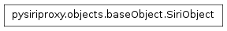

The factory module¶
The factory module contains classes which provide factory functions for creating concrete SiriObjects for specific purposes.
The Commands class¶

- class pysiriproxy.objects.factory.Commands¶
The Commands class contains the various types of Commands as well as a function for creating Commands of a specific type.
This class provides a factory method for creating Commands of a specific type.
- CancelRequest¶
The CancelRequest command type.
- CancelSnippet¶
The CancelSnippet command type.
- ConfirmSnippet¶
The ConfirmSnippet command type.
- ConfirmationOptions¶
The ConfirmationOptions command type.
- ResultCallback¶
The ResultCallback command type.
- SendCommands¶
The SendCommands command type.
- classmethod create(commandType, *args, **kwargs)¶
Create a Command of the specific type.
- commandType – The type of Command to create
- args – The arguments
- kwargs – THe keyword arguments
The Views class¶
- class pysiriproxy.objects.factory.Views¶
Contains the various types of Views as well as a function for creating Views of a specific type.
This class also contains a factory method for creating views of a specific type.
- AddViews¶
The AddViews object type.
- AnswerSnippet¶
The AnswerSnippet object type.
- MapItemSnippet¶
The MapItemSnippet object type.
- MapPoints¶
The ShowMapPoints object type.
- Utterance¶
The Utterance object type.
- classmethod create(viewType, *args, **kwargs)¶
Create a View of the given type.
- viewType – The type of View to create
- args – The arguments
- kwargs – The keyword arguments to create
The SiriObject class¶

- class pysiriproxy.objects.factory.SiriObject(className, group)¶
The SiriObject class encapsulates the base functionality for all object being sent to the iPhone or to Apple’s web server.
Note
This class is meant to be subclassed to provide the implementation for a specific object.
- ProtocolVersion¶
The identifier which indicates the version of the protocol.
- classmethod isArgumentList(obj)¶
Determine if the given object is a list of arguments, or not.
- obj – The object
- classmethod isSiriObject(obj)¶
Determine if the given object is a SiriObject, or not.
- obj – The object
- makeRoot(refId=None, aceId=None)¶
Make the SiriObject the root object.
- refId – The refId for this object
- aceId – The aceId for this object
- setAceId(aceId=None)¶
Set the ace id for this object.
- aceId – The aceId for this object
- setNonNoneArguments(argumentNames, localVars)¶
Takes a list of strings which represent names of input variables and sets properties of the same name on the current object if the value of the argument is not None.
- argumentNames – The list of argument names to set
- localVars – The local variables
- setRefId(refId=None)¶
Set the ref id for this object.
- refId – The refId for this object
- toDict()¶
Convert this object into a Python dictionary.
The ObjectFactory class¶
- class pysiriproxy.objects.factory.ObjectFactory[source]¶
The ObjectFactory provides factory methods for constructing concrete SiriObject objects of specific types.
- classmethod action(actionType, *args, **kwargs)[source]¶
Create a SiriObject Action of the specific type.
- actionType – The type of action to create
- args – The arguments
- kwargs – The keyword arguments
Create a SiriObject Button of the specific type.
- buttonType – The type of Button to create
- buttonText – The button text
- args – The argumnets
- kwargs – The keyword arguments
- classmethod currentLocation(label=None)[source]¶
Create a SiriObject for the current location.
- label – The label to display on the map pin
- classmethod directions(directionsType, source, destination, utterance=None)[source]¶
Create a SiriObject to display directions between two locations.
- directionsType – The type of directions to provide
- source – The source location
- destination – The destination location
- utterance – The utterance to speak
- classmethod drivingDirections(source, destination, utterance=None)[source]¶
Create driving directions between the two locations.
- source – The source location
- destination – The destination location
- utterance – The utterance to speak
- classmethod location(street=None, city=None, stateCode=None, countryCode=None, postalCode=None, latitude=None, longitude=None)[source]¶
Create a SiriObject location.
street – The string containing the street for the location
city – The string containing the city for the location
stateCode – The string containing the state code for the location
- countryCode – The string containing the country code for the
location
postalCode – The string containing the postal code for the location
latitude – The string containing the latitude for the location
longitude – The string containing the longitude for the location
- classmethod mapItem(locations)[source]¶
Create a SiriObject map item.
- locations – The list of locations to display on the map
- classmethod publicTransitDirections(source, destination, utterance=None)[source]¶
Create public transportation directions between the two locations.
- source – The source location
- destination – The destination location
- utterance – The utterance to speak
- classmethod utterance(displayText, spokenText=None, listenAfterSpeaking=False, identifier='Misc#ident')[source]¶
Create a SiriObject utterance.
- displayText – The text to display
- spokenText – The text that Siri will speak
- listenAfterSpeaking – True for Siri to listen for a response
- identifier – The identifier for the utterance
The Actions class¶

- class pysiriproxy.objects.factory.Actions¶
The Actions class contains a list of Action types as well as a function for creating specific types of Actions.
This class provides a factory function for creating Actions of a specific type.
- CustomCommand¶
The CustomCommand action type.
- WebSearch¶
The WebSearch action type.
- classmethod create(actionType, *args, **kwargs)¶
Return a specific Action wrapped in a SendCommands object so it can be sent to Siri as a command.
- actionType – The type of Action to create
- args – The arguments
- kwargs – The keyword arguments
The Buttons class¶

- class pysiriproxy.objects.factory.Buttons¶
The Buttons class contains the various types of Buttons as well as a function for creating Buttons of a specific type.
This class provides a factory function for creating Buttons of a specific type.
- Custom¶
A button that executes a custom command when it is pressed.
- WebSearch¶
A button that performs a web search for a specific query when it is pressed.
- classmethod create(buttonType, buttonText, *args, **kwargs)¶
Create a Button of the given type.
- buttonType – The type of Button to create
- buttonText – The text displayed on the button
- args – The arguments
- kwargs – The keyword arguments
The ResponseFactory class¶
- class pysiriproxy.objects.factory.ResponseFactory[source]¶
The ResponseFactory is responsible for creating specific SiriObject responses to be sent from pysiriproxy to the iPhone user. These responses include things such as, creating a view composed of SiriObjects, sending a request completed object, and others.
- classmethod directions(refId, directionsType, source, destination, utterance=None)[source]¶
Create directions to be sent to the iPhone.
- refId – The reference id
- directionsType – The type of directions to provide
- source – The source location
- destination – The destination location
- utterance – The utterance to speak
- classmethod drivingDirections(refId, source, destination, utterance=None)[source]¶
Create driving directions to be sent to the iPhone.
- refId – The reference id
- source – The source location
- destination – The destination location
- utterance – The utterance to speak
- classmethod publicTransitDirections(refId, source, destination, utterance=None)[source]¶
Create public transportation directions to be sent to the iPhone.
- refId – The reference id
- source – The source location
- destination – The destination location
- utterance – The utterance to speak
- classmethod requestCompleted(refId, callbacks=None)[source]¶
Create a request completed object.
- refId – The reference id
- callbacks – The list of callbacks
- classmethod utterance(refId, displayText, spokenText=None, listenAfterSpeaking=False, identifier='Misc#ident')[source]¶
Create an utterance with the given display text, and spoken text.
refId – The reference id
displayText – The text to be displayed
spokenText – The text to be spoken by Siri
- listenAfterSpeaking – True for Siri to listen for a response
after speaking, False otherwise
- classmethod view(refId, subObjects, dialogPhase='Completion')[source]¶
Create an utterance view composed of several sub objects.
refId – The reference id
- subObjects – The list of SiriObjects the view will be composed of
or a list of tuple arguments to create SiriObjects
dialogPhase – The dialogPhase
The DataObjects class¶

- class pysiriproxy.objects.factory.DataObjects¶
The DataObjects class provides definitions of various types of objects to display data to the Siri user.
This class also provides a factory method for creating objects of specific types.
- Answer¶
The object type corresponding to Siri’s answer to a user’s question.
- AnswerLine¶
The object type corresponding to a single answer line.
- CurrentLocation¶
The object type corresponding to creating an item on a map corresponding to the iPhone’s current location.
- Location¶
The object type corresponding to a map location.
- MapItem¶
The object type corresponding to creating an item on a map.
- classmethod create(objectType, *args, **kwargs)¶
Create a DataObject of the given type.
- dataObject – The type of DataObject to create
- args – The arguments
- kwargs – The keyword arguments
The Requests class¶
- class pysiriproxy.objects.factory.Requests¶
The Requests class contains the various types of Requests as well as a function for creating Requests of a specific type.
This class contains a factory method for creating Request object of a specific type.
- GetRequestOrigin¶
The GetRequestOrigin object type.
- RequestCompleted¶
The RequestCompleted object type.
- SetRequestOrigin¶
The SetRequestOrigin object type.
- StartRequest¶
The StartRequest object type.
- classmethod create(requestType, *args, **kwargs)¶
Create a Request of the given type.
- requestType – The request type
- args – The arguments
- kwargs – The keyword arguments